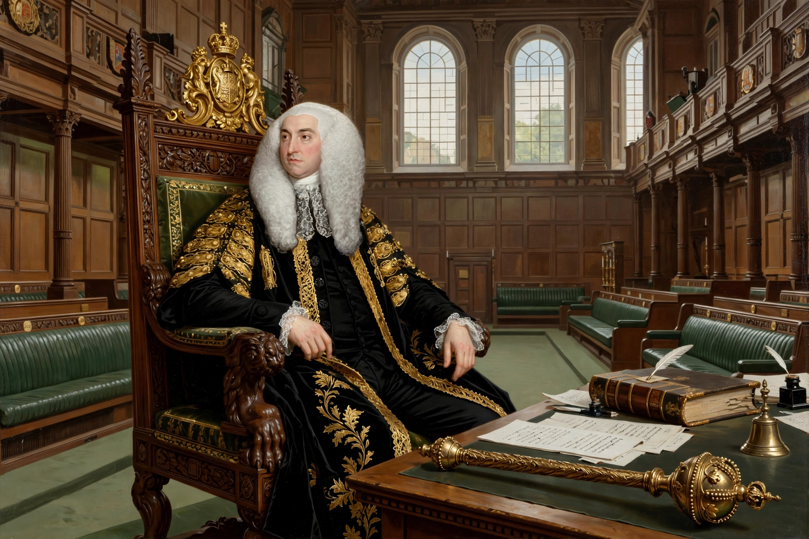

| Arthur Onslow | |
|---|---|
 Arthur Onslow, Speaker of the House of Commons | |
| Born | 3 October 1691, Kensington, London |
| Died | 17 February 1768 (aged 76) |
| Office | Speaker of the House of Commons |
| In office | 23 January 1728 – 18 March 1761 |
| Predecessor | Spencer Compton, 1st Earl of Wilmington |
| Successor | John Cust |
| Nationality | British |
Arthur Onslow (3 October 1691 – 17 February 1768) was an English politician who served as Speaker of the House of Commons from 1728 to 1761. His tenure of more than 33 years—the longest of any Speaker—spanned five parliaments and is credited with establishing the modern conception of the Speakership as an impartial office standing above party politics.
Onslow was born in Kensington, the son of Foot Onslow, an MP and commissioner of excise. He was educated at the Royal Grammar School, Guildford, and Winchester College, and studied law at the Middle Temple, being called to the bar in 1713. He entered Parliament in 1720 as MP for Guildford, and in 1727 became MP for Surrey, which he represented for the rest of his Commons career.
Chosen Speaker in January 1728 with the support of Sir Robert Walpole, Onslow was re-elected unanimously in successive parliaments. He was a punctilious guardian of the House's procedures and privileges, insisting on regular attendance, orderly debate, and the strict recording of proceedings. He kept detailed notes on precedents which became an important source for later procedural authorities such as John Hatsell. Onslow famously declined offices and favours that might compromise his independence, setting a standard of neutrality that successors were expected to follow.
He presided during the administrations of Walpole, Pelham, and Newcastle, and through the War of the Austrian Succession and the first years of the Seven Years' War.
Declining health forced his retirement in 1761, when the House voted him thanks and the Crown granted him a pension of £3,000 a year—an early recognition of the Speaker's need for financial independence. He died in 1768. His son George Onslow also became a prominent parliamentarian, and the family produced another Speaker in the following generation.
Speaker of the House of Commons · Robert Walpole · William Lenthall